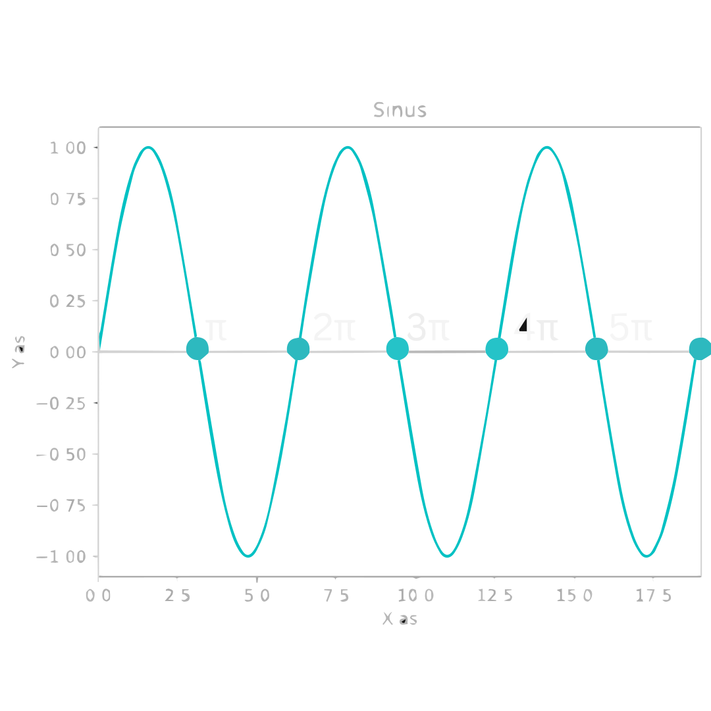
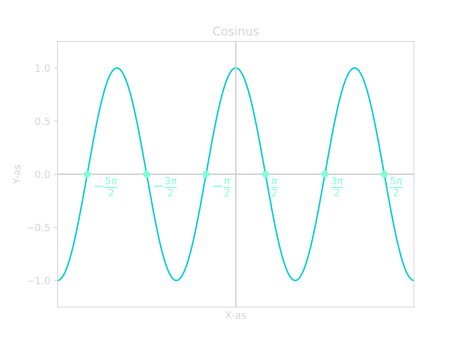
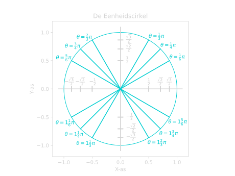

Goniometrie
De Goniometrische Functies
Goniometrie gaat vooral over driehoeken en wat we daar allemaal mee kunnen berekenen. We kunnen de goniometrische functies gebruiken om hiermee te helpen. We gebruiken ze als we een hoek en een zijde hebben van een rechthoekige driehoek. We kunnen dan de andere twee zijdes berekenen met de goede goniometrische functie. Dit is erg handig, want met Pythagoras kunnen we dit niet doen.
Er zijn drie soorten goniometrische functies die we vaak gebruiken. De sinus, de cosinus en de tangens. Welke functie we gebruiken is afhankelijk van wat we hebben en wat we willen berekenen. Hieronder zie je het verband tussen de functies en de zijdes van een rechthoekige driehoek.
Belangrijk
Goniometrische Functies
Dit kan je onthouden met het ezelsbruggetje: "SOS CAS TOA". Dit kun je als volgt begrijpen:
- SOS: Sinus is Overstaand gedeeld door Schuin.
- CAS: Cosinus is Aanliggend gedeeld door Schuin.
- TOA: Tangens is Overstaand gedeeld door Aanliggend.
Overstaand, Aanliggend en Schuin
Overstaand, Aanliggend en Schuin gaan over de verschillende zijdes van een rechthoekige driehoek. Dit is altijd bepaald ten opzichte van de hoek waar je naar kijkt. Dus in Figuur 1 kijken we ten opzichte van de hoek \(\theta\).
Vanuit deze hoek \(\theta\) bepalen we welke de overstaande zijde is en welke de aanliggende. De schuine zijde is altijd hetzelfde voor een rechthoekige driehoek. Dus dan maakt het niet uit vanaf welke hoek je kijkt.
Figuur 1. Een rechthoekige driehoek met de overstaande, aanliggende en schuine zijdes aangegeven.
De kenmerken van de verschillende soorten zijdes:
- Schuine zijde: De zijde tegenover de hoek van \(90 ^{\circ}\). Het is ook de langste zijde van de rechthoekige driehoek.
- Aanliggende zijde: De andere zijde die samen met de schuine zijde de hoek \(\theta\) maakt.
- Overstaande zijde: De zijde tegenover de hoek \(\theta\).
Zijdes Bepalen
Laten we naar een voorbeeld kijken. In Figuur 2 hieronder hebben we een rechthoekige driehoek gegeven gekregen.

Figuur 2. Een rechthoekige driehoek met de hoek \(\theta\) en de punten \(A\), \(B\) en \(C\).
Stel we willen zijde \(BC\) bepalen en we weten dat \(\theta = 60 ^{\circ}\) en \(AB = 2\). Hoe pakken we dit dan aan?
Zoals we eerder zagen, kunnen we dit probleem niet oplossen met Pythagoras. Hiervoor hebben we de goniometrische funties nodig. Maar welke moeten we gebruiken, de sinus, cosinus of de tangens?
We hebben de hoek \(\theta\) en de zijde \(AB\). Dit is de aanliggende zijde, want het maakt samen met de schuine zijde de hoek \(\theta\). Verder willen we zijde \(BC\) weten. Dit is de overstaande zijde, want het is de zijde tegenover hoek \(\theta\).
We zoeken dus een functie die iets met een overstaande en aanliggende zijde heeft. We kunnen bij de goniometrische functies zien dat we dan de tangens moeten gebruiken. Deze functie heeft namelijk beide zijdes die we willen. Laten we als eerst de tangens opschrijven:
De overstaande zijde is dus \(BC\) en de aanliggende is \(AB\):
Nu kunnen we dit omschrijven om \(BC\) vrij te maken:
Laten we nu de gegevens invullen die we hebben:
Als we dit in een rekenmachine stoppen, dan vinden we:
We kunnen in Figuur 2 controleren dat dit antwoord best zou kunnen kloppen.
Hoeken Bepalen
We kunnen de goniometrische functies ook gebruiken om een hoek te bepalen. We hebben daarvoor \(2\) zijdes van de rechthoekige driehoek nodig.
We gebruiken dan de inverse van de goniometrische functie. Dit noteren we dan met een arc of met een macht \(-1\).
Belangrijk
Notatie van de inverse goniometrische functies
Op een rekenmachine worden de inverse functies aangegeven met een \(^{-1}\). Dus:
- \(\large{\sin^{-1}(x)}\)
- \(\large{\cos^{-1}(x)}\)
- \(\large{\tan^{-1}(x).}\)
Maar we raden het af om het zo op te schrijven, omdat dit verwarring kan opleveren. Want
De inverse betekent hier dus niet dat we \(1\) gedeeld door de functie moeten doen. Maar bij \(x^{-1}\) is dit juist wel het geval. Dit kan verwarrend zijn, dus om dit te vermijden schrijven wij de inverse van \(\sin(x)\) als \(\arcsin(x)\) op.
Laten we naar een voorbeeld kijken om te zien hoe dit werkt. In Figuur 3 hebben we een rechthoekige driehoek met zijdes \(BC = 2\) en \(AB = 2\).

Figuur 3. Een rechthoekige driehoek met zijdes \(BC = 2\) en \(AB = 2\).
We willen nu de hoek \(\theta\) bepalen. Om dit te doen, kijken we als eerst naar welke zijdes we hebben.
We hebben de zijde \(BC\) als overstaande zijde. Dit kunnen we herkennen aan het feit dat de zijde niet is verbonden met de hoek \(\theta\). We hebben ook zijde \(AB\) als aanliggende zijde. Dit weten we omdat het samen met de schuine zijde de hoek \(\theta\) maakt. En \(AB\) is niet de schuine zijde, want de schuine zijde is de zijde tegenover de \(90 ^{\circ}\) hoek.
We hebben dus de overstaande en de aanliggende zijde. Dit betekent dus dat we de tangens moeten gebruiken:
Als we nu \(BC = 2\) en \(AB = 2\) invullen:
Dus we weten dat de tangens van \(\theta\) gelijk is aan \(1\). We kunnen nu \(\theta\) bepalen door de \(\arctan\) te nemen:
Als we dit in onze rekenmachine stoppen (dus \(\tan^{-1}(1)\)), dan vinden we:
En als we kijken in Figuur 3, dan kunnen we controleren dat dit een logisch antwoord is. Het ziet er namelijk ook uit als de helft van een rechte (\(90 ^{\circ}\)) hoek.
Voorbeelden
Voorbeeld 1: Bereken zijde \(BC\)
Bereken zijde \(BC\) in de onderstaande rechthoekige driehoek.
Figuur 4. Een rechthoekige driehoek met een hoek \(\theta = 30 ^{\circ}\) en een zijde \(AC = 4\).
Uitwerking
We hebben dus de hoek \(\theta=30 ^{\circ}\) en een zijde \(AC = 4\). Zijde \(AC\) is de schuine zijde, want het is de zijde tegenover de hoek van \(90 ^{\circ}\). We willen zijde \(BC\) bepalen en dat is de overstaande zijde. \(BC\) is namelijk de zijde tegenover \(\theta\).
Dus onze functie moet iets met een schuine zijde hebben en iets met een overstaande zijde. Als we bij de goniometrische functies kijken, dan zien we dat we de sinus moeten gebruiken. Laten we deze opschrijven:
We weten dus dat \(AC\) de schuine zijde is en \(BC\) de overstaande:
We willen \(BC\) bepalen, dus laten we die vrij maken. We moeten dus de formule gaan omschrijven:
Als we nu \(AC = 4\) en \(\theta = 30 ^{\circ}\) invullen, krijgen we:
En als we dit in een rekenmachine stoppen, dan vinden we:
En als we dit controleren in Figuur 4, dan kunnen we zien dat dit een logisch antwoord is.
Voorbeeld 2: Bepaal de hoek \(\theta\)
Bepaal de hoek \(\theta\) in de onderstaande rechthoekige driehoek.
Figuur 5. Een rechthoekige driehoek met zijdes \(AC = 4\) en \(AB = 3\).
Uitwerking
We moeten de hoek \(\theta\) bepalen, dus laten we eerst kijken naar welke zijdes we hebben. Zijde \(AC\) is de schuine zijde, want het is de zijde tegenover de rechte hoek. Dat betekent dat \(AB\) de aanliggende zijde is, want samen met de schuine zijde \(AC\) maken ze \(\theta\).
Dus we hebben de schuine en aanliggende zijde. Dit betekent dat we de cosinus moeten gebruiken:
We vullen dus \(AB\) in als aanliggende zijde en \(AC\) als schuine zijde:
We weten dat \(AB = 3\) en \(AC = 4\):
Om de hoek te bepalen, nemen we de \(\arccos\):
Als we dit invullen op onze rekenmachine (dus \(\cos^{-1}(\frac{3}{4})\)), dan vinden we:
Graden ronden we af op \(1\) decimaal, dus ons eindantwoord wordt dan:
En bij VMBO ronden we af op gehele getallen:
Voorbeeld 3: Bepaal de hoek \(\theta\) en zijde \(AB\)
Bepaal de hoek \(\theta\) in de onderstaande rechthoekige driehoek.
Figuur 6. Een rechthoekige driehoek met zijdes \(AC = 8\) en \(BC = 6\).
Uitwerking
We willen de hoek \(\theta\) en de zijde \(AB\) bepalen, dus laten we als eerst beginnen met \(\theta\).
We hebben de zijdes \(BC\) en de zijdes \(AC\) gegeven. Zijde \(BC\) is de overstaande zijde, want het is de zijde tegenover de hoek \(\theta\).
Om te bepalen welke zijde \(AC\) is, moeten we goed opletten. De zijde tegenover de rechte hoek is de schuine zijde. In dit geval is dat zijde \(AB\). Dit betekent dus dat zijde \(AC\) de aanliggende zijde is, want samen met de schuine zijde maken ze \(\theta\).
We hebben dus de overstaande en de aanliggende zijde, dus moeten we de tangens gebruiken:
We weten dus dat de overstaande zijde \(BC\) is en de aanliggende \(AC\):
Nu kunnen we \(BC = 6\) en \(AC = 8\) invullen:
Om \(\theta\) te bepalen, kunnen we de \(\arctan\) nemen:
Als we dit invullen in onze rekenmachine (dus \(\tan^{-1}(\frac{3}{4})\)), dan vinden we:
Graden ronden we af op \(1\) decimaal, dus ons eindantwoord wordt:
En bij VMBO ronden we af op gehele getallen:
Nu willen we zijde \(AB\) bepalen. We kunnen dit op meerdere manieren doen. We kunnen dit berekenen met de sinus, met de cosinus of met Pythagoras. Wij kiezen er hier voor om het met de sinus te berekenen. Maar voel je vrij om de andere methodes te proberen om te kijken of je het beheerst!
Voor de sinus hebben we iets met de overstaande en de schuine zijde:
We hebben net gezien dat de overstaande zijde \(BC\) is en \(AB\) de schuine zijde:
We moeten nu deze formule omschrijven om AB vrij te maken:
Nu vullen we \(\theta = 36.869...\) en \(BC = 6\) in:
Zorg er dus voor dat je \(\theta\) niet tussendoor afrond, want dan krijg je ook een (iets) ander antwoord. Als we dit invullen op onze rekenmachine, dan vinden we:
De Sinus en Cosinus functies
Laten we nu iets dieper ingaan op de sinus en cosinus functies. Wat deze functies bijzonder maakt, is dat het periodieke functies zijn. Dit betekent dat de functie zich herhaalt na een bepaalde tijd. In dit geval is dat elke \(2 \pi\). Dus elke \(2 \pi\) begint de functie weer opnieuw en herhaalt het zich weer. We zeggen dan dat deze functie een periode heeft van \(2 \pi\) (zie ook Figuur 7 en Figuur 8).
Graden vs Radialen
In de meetkunde gebruiken we vaak graden. Maar als we meer gaan kijken naar de goniometrische functies zelf en hun vorm, dan zijn radialen vaak handiger.
Radialen is een eenheid voor hoeken, net zoals graden. Radialen gaan niet van \(0\) tot \(360 ^{\circ}\), maar van \(0\) tot \(2 \pi\). We kiezen voor \(2 \pi\) als eindpunt omdat dit de omtrek is van een cirkel met straal \(1\). Dus als we \(1\) rondje doen, hebben we \(2 \pi\) afgelegd, \(2\) rondjes hebben we \(4 \pi\) afgelegd, \(3\) rondjes \(6 \pi\) enzovoort. Een half rondje is dan \(\pi\) of \(180 ^{\circ}\).
We kunnen van radialen naar graden omrekenen en andersom:
- Graden naar Radialen: \(\large{\quad \theta_{grad} \cdot \Large \frac{2 \pi}{360 ^{\circ}} \large = \theta_{rad}}\)
- Radialen naar Graden: \(\large{\quad \theta_{rad} \cdot \Large \frac{360 ^{\circ}}{2 \pi} \large = \theta_{grad}}\)


Belangrijk
Periodiciteit van Sinus en Cosinus
Het feit dat de functie zich herhaald kunnen we ook terug zien in de functie zelf:
Dus dit betekent bijvoorbeeld dat:
- \(\sin(\pi) = \sin(3 \pi)\)
- \(\cos(1 \frac{1}{2}) = \cos(- \frac{1}{2} \pi)\)
- \(\cos(4 \pi) = \cos(6 \pi)\)
- \(\sin(- \frac{1}{4} \pi) = \sin(1 \frac{3}{4} \pi)\)
- etc.
Het feit dat deze functies periodiek zijn, is erg belangrijk als we er vergelijkingen mee gaan oplossen. Laten we kijken hoe dat moet.
Sinus en Cosinus vergelijkingen
Stel we willen de volgende vergelijking oplossen:
Hoe doen we dat? We willen dus kijken waar de sinus functie een \(y\)-waarde heeft van \(0\). In Figuur 7 kunnen we aflezen dat dit geldt bij \(x=0\), maar ook bij andere \(x\)-waardes. Namelijk \(x = -2 \pi\), \(x = -\pi\), \(x = \pi\) en \(x = 2 \pi\). En deze functie gaat oneindig lang door, dus dit blijft maar zo door gaan. Hoe noteren we dit wiskundig?
We schrijven dit als volgt op:
\(k\) kan hier elk geheel getal zijn. Dus \(k = 0, \pm 1, \pm 2, \pm 3, ...\)
De waardes van \(k\) gaan oneindig lang door, en dat is ook wat we willen om onze oplossingen te beschrijven. Maar stel nou dat we alle oplossingen willen weten op het domein \([0, 2 \pi]\). Hoe doen we dat dan met de oplossing die we net hebben gevonden?
We moeten dan alle mogelijke waardes voor \(k\) proberen die ons een \(x\) geeft binnen het domein van \([0, 2\pi]\). Dus welke waardes van \(k\) moeten we invullen in \(x = k \cdot \pi\) om een \(x\) te krijgen tussen \(0\) en \(2 \pi\)?
Dit zijn de waardes \(k = 0\), \(k = 1\) en \(k = 2\). Want als we \(k = 3\) proberen, dan krijgen we \(x = 3 \pi\) en dit is te groot. Als we aan de andere kant \(k = -1\) proberen, dan krijgen we \(x = -\pi\) en dit is weer te klein. Dus de oplossingen op het domein \([0, 2 \pi]\) worden:
Laten we naar een ander voorbeeld kijken. Stel we willen nu de volgende vergelijking oplossen:
Hoe doen we dit? We moeten dus kijken voor welke \(x\)-waardes de cosinus een \(y\)-waarde heeft van \(1\). In Figuur 8 kunnen we zien dat dit is bij \(x = 0\). Maar ook bij \(x = -2\pi\) en bij \(x = 2\pi\). De functie herhaalt zich steeds, dus dit patroon herhaalt zich ook. Onze oplossing wordt dus:
\(k\) kan weer elk geheel getal zijn. Dus de oplossingen op het domein \([0, 2 \pi]\) worden dan:
Dit is dus voor \(k = 0\) of \(k = 1\). Want als we andere waardes voor \(k\) proberen, dan is \(x\) niet meer tussen \(0\) en \(2 \pi\). Dus dit moeten de enige twee oplossingen zijn op het domein \([0, 2 \pi]\).
We hebben dit opgelost door de functies te schetsen, maar kunnen we het ook oplossen zonder een schets? Het antwoord is ja! Om goed te begrijpen hoe dit moet, moeten we eerst kijken naar de symmetrie in de sinus en cosinus functies. We zullen dat nodig hebben om de algemene oplossing te kunnen begrijpen.
Symmetrie
De cosinus is gespiegeld in de \(y\)-as (zie eventueel Figuur 8). Dus alles links van de \(y\)-as is hetzelfde als rechts van de \(y\)-as. Links van de \(y\)-as is bij een negatieve \(x\), rechts van de \(y\)-as is bij een positieve \(x\). Dus met andere woorden:
Bij de sinus is dit juist omgekeerd. Het is niet gespiegeld in de \(y\)-as, maar gespiegeld bij de oorsprong (zie eventueel Figuur 7). Dus alles dat rechts van de \(y\)-as positief is, wordt negatief links van de \(y\)-as. Andersom geldt dit natuurlijk ook. Dit betekent dus dat er geldt dat:
Apart van deze symmetrieën hebben de sinus en cosinus nog een andere symmetrie. Deze symmetrie is als je \(\sin(-x)\) of \(\cos(-x)\) met \(\pi\) naar rechts verschuift. En ik denk dat dit makkelijker te zien is met wat filmpjes. Laten we beginnen met de symmetrie van de sinus functies.
Video
Sinus symmetrie
Filmpje: Een sinus functie wordt aangepast om te bewijzen dat \(\sin(x) = \sin(\pi - x)\). Eerst wordt de transformatie \(\sin(x) \rightarrow \sin(-x)\) toegepast. Vervolgens wordt deze functie naar rechts verschoven met \(\pi\). Deze nieuwe functie wordt beschreven door \(\sin(\pi - x)\) en we zien dat dit precies hetzelfde is als onze oude functie \(\sin(x)\).
We zien dus dat we een \(\sin(x)\) functie op zo'n manier kunnen aanpassen dat we de functie \(\sin(\pi - x)\) krijgen. En deze functie is weer precies dezelfde functie als de \(\sin(x)\) die we eerst hadden. Dit betekent dus dat we de volgende symmetrie hebben:
Voor consinus functies hebben we een soort gelijke symmetrie.
Video
Cosinus symmetrie
Filmpje: Een cosinus functie wordt aangepast om te bewijzen dat \(-\cos(x) = \cos(\pi - x)\). Eerst verandert de \(\cos(x)\) naar \(-\cos(x)\) en tegelijkertijd wordt laten zien dat \(\cos(x) = \cos(-x)\). Daarna wordt de \(\cos(-x)\) functie naar rechts verschoven met \(\pi\). Deze verplaatste functie wordt beschreven door \(\cos(\pi - x)\) en dit is precies hetzelfde als \(- \cos(x)\).
We zien dus dat als we een \(\cos(-x)\) functie met \(\pi\) naar rechts verschuiven, dat we dezelfde functie krijgen als \(- \cos(x)\). Voor cosinus functies hebben we dus de volgende symmetrie:
We zetten hieronder nog even alle symmetrieën op een rijtje.
Belangrijk
Symmetrieformules
-
\[\large{\sin(-x) = - \sin(x)}\]
-
\[\large{\cos(-x) = \cos(x)}\]
-
\[\large{\sin(\pi - x) = \sin(x)}\]
-
\[\large{\cos(\pi - x) = - \cos(x)}\]
Met deze kennis kunnen we nu sinus en cosinus vergelijking gaan oplossen. We hebben daarvoor de symmetrieformules en de periodiciteit van de functies nodig. Laten we eerst kijken naar een sinus vergelijking.
Sinus vergelijking oplossen
Laten we weer kijken naar de volgende vergelijking:
Om dit op te lossen willen we eerst aan beide kanten een \(\sin\) functie hebben. We moeten dus de \(0\) schrijven als \(\sin(a)\). We willen er dus achter komen van welk getal we de sinus moeten nemen om \(0\) te krijgen. Om dit te doen kunnen we de \(\arcsin\) van \(0\) nemen (later zullen we de eenheidscirkel gebruiken).
We krijgen dan dus \(a = \arcsin(0)\). Als we dit invullen, dan vinden we \(a = 0\). Dit betekent dus dat we de \(0\) ook kunnen schrijven als \(\sin(0)\). Onze vergelijking wordt dan dus:
Nu kunnen we aan beide kanten de sinus weghalen om te vinden:
Dit is dus \(1\) oplossing, maar we moeten nog rekening houden met de periodiciteit en symmetrie. We weten dus dat de functie periodiek is en dat het elke \(2\pi\) zich herhaalt. Dit betekent dus dat \(x = 2\pi\), \(x = 4\pi\), \(x=6\pi\), etc. ook oplossingen zijn. Dus om hier rekening mee te houden schrijven we:
\(k\) kan hier dus alle gehele getallen zijn. Maar we hebben ook nog de symmetrie die we in de symmetrieformules hebben gezien. Dus we weten dat:
Dit betekent dus dat er moet gelden dat:
Om hier rekening mee te houden moeten we nog een set oplossingen toevoegen:
In dit geval kunnen we deze twee verschillende sets combineren. Want we krijgen bij de linker de oplossingen \(x = 0, 2\pi, 4\pi, ...\) en bij de rechter de oplossingen \(x = \pi, 3 \pi, 5 \pi, ...\). Dus samen zijn onze oplossingen \(x = 0, \pi, 2 \pi, 3\pi, 4\pi, 5\pi, ...\). Dit kunnen we opschrijven als:
En dat is ook wat we eerder gevonden hadden. In het algemeen hebben we dus voor een vergelijking van de vorm:
de volgende oplossingen:
Cosinus vergelijking oplossen
We kijken nu weer naar de volgende cosinus vergelijking:
We willen hier ook weer aan beide kanten dezelfde functie hebben, dus aan beide kanten een cosinus. We moeten dus de \(1\) gaan schrijven als een cosinus. Dus welke getal moet \(a\) zijn zodat \(\cos(a) = 1\)? Als we de \(\arccos\) nemen, dan vinden we \(a = \arccos(1) = 0\).
We weten nu dus dat \(1 = \cos(0)\). De vergelijking kunnen we dan dus schrijven als:
Als we aan beide kanten de \(\cos\) weg halen, dan vinden we dus dat \(1\) van onze oplossingen is:
Maar we moeten weer rekening houden met de periodiciteit en de symmetrie van de cosinus. Net zoals bij de sinus herhaalt de cosinus zich elke \(2 \pi\), dus onze oplossingen herhaling zich ook op dezelfde manier:
Bij de cosinus hebben we een andere symmetrie dan bij de sinus. Bij de cosinus hebben we:
Dus om hier rekening mee te houden moeten we nog een set oplossingen toevoegen:
Maar in dit geval geldt er dat \(0 = -0\), dus dit kunnen we gewoon weer versimpelen naar wat we eerst hadden:
En dat is ook wat we eerder gevonden hadden. In het algemeen hebben we dus voor een vergelijking van de vorm:
de volgende oplossingen:
We hebben nu dus de algemene oplossingen gevonden voor sinus en cosinus vergelijkingen!
Belangrijk
Algemene Oplossing
Sinus
Een vergelijking van de vorm:
heeft de volgende oplossingen:
\(k\) kan hier elk geheel getal zijn, dus \(k = 0, \pm 1, \pm 2, \pm 3, ...\)
Cosinus
Een vergelijking van de vorm:
heeft de volgende oplossingen:
\(k\) kan hier weer elk geheel getal zijn, dus \(k = 0, \pm 1, \pm 2, \pm 3, ...\)
Sinus en Cosinus naar elkaar omschrijven
De sinus en de cosinus functies lijken best veel op elkaar: ze hebben dezelfde vorm, herhalen elke \(2 \pi\) en gaan beide van \(-1\) tot \(1\). Het enige verschil is dat ze op andere punten beginnen. De sinus begint bij \(y=0\) en de cosinus bij \(y=1\). Dat is het enige verschil tussen de twee functies.
Dus als we de sinus functie een klein beetje kunnen verschuiven zodat het bij \(y=1\) begint, dan hebben we een cosinus gemaakt. Het blijkt dat we \(\sin(x)\) met \(\dfrac{1}{2} \pi\) naar links moeten verschuiven om dit te bereiken. De verschoven sinus krijgt de vorm \(\sin(x + \frac{1}{2} \pi)\) en dit is dus hetzelfde als \(\cos(x)\):
Video
We kunnen natuurlijk ook de cosinus naar rechts verschuiven met \(\frac{1}{2} \pi\) in plaats van de sinus naar links te verschuiven. De verschoven cosinus krijgt dan de vorm \(\cos(x - \frac{1}{2} \pi)\) en dit is dan gelijk aan \(\sin(x)\):
Video
Belangrijk
Sinus en Cosinus omschrijven
Andere manier van omschrijven
Als je niet wilt onthouden bij welke functie je \(+ \frac{1}{2} \pi\) doet en bij welke \(- \frac{1}{2} \pi\), dan kun je het ook als volgt omschrijven:
En dit verband werkt ook altijd.
Bewijs
Dit kunnen we zelf bewijzen met behulp van de Symmetrieformules.
Om van een cosinus naar een sinus te gaan, kunnen de volgende symmetrie gebruiken:
Als we dit toepassen op \(\sin(x + \frac{1}{2} \pi)\), dan vinden we:
Als we dit uitwerken, dan vinden we:
Het verband \(\cos(x) = \sin(x + \frac{1}{2} \pi)\) wordt dan dus:
Om van een sinus naar een cosinus te gaan, kunnen we de volgende symmetrie gebruiken:
Als we dit toepassen op \(\cos(x - \frac{1}{2} \pi)\), dan vinden we:
Als we de haakjes uitwerken, vinden we:
Het verband \(\sin(x) = \cos(x - \frac{1}{2} \pi)\) wordt dan dus:
Voorbeelden
Voorbeeld 1: \(\cos(2x) = 0\)
Los op: \(\cos(2x) = 0\) Uitwerking
Om dit op te lossen willen we eerst aan beide kanten een cosinus hebben. We moeten dus kijken hoe we de \(0\) als cosinus schrijven. Als we de \(\arccos\) van \(0\) nemen, dan vinden we \(\frac{1}{2} \pi\). Met andere woorden, als we de cosinus van \(\frac{1}{2} \pi\) nemen, krijgen we weer de \(0\) terug. En omdat dus \(\cos(\frac{1}{2} \pi) = 0\), kunnen we dit invullen in de vergelijking:
Nu kunnen we de algemene oplossing gebruiken voor een cosinus:
Nu kunnen we alles door \(2\) delen om als eindantwoord te vinden:
In dit geval kunnen we eventueel deze oplossingen ook combineren:
- Linker set: \(x = -\frac{3}{4} \pi, \frac{1}{4} \pi, 1 \frac{1}{4} \pi, 2 \frac{1}{4} \pi, ...\) *
- Rechter set: \(x = - \frac{1}{4} \pi, \frac{3}{4} \pi, 1 \frac{3}{4} \pi, ...\) *
- Gecombineerd: \(x = - \frac{3}{4} \pi, - \frac{1}{4} \pi, \frac{3}{4} \pi, 1 \frac{1}{4} \pi, 1 \frac{3}{4} \pi, ...\) *
Deze combinatie kunnen we beschrijven op de volgende manier:
*De oplossingen gaan ook door in het negatieve, maar die zijn hier weg gelaten om het overzichtelijk te houden.
Voorbeeld 2: \(\sin(3x) = \cos(-x)\)
Los op: \(\sin(3x) = \cos(-x)\) Uitwerking
Als eerst kunnen met de symmetrieformule \(\cos(x) = \cos(-x)\) dit ook schrijven als:
Om dit op te lossen, moeten we óf van beide functies een sinus maken óf van beide functies een cosinus. We kiezen er hier voor om van beide functies een sinus te maken. We moeten dan dus de \(\cos(x)\) omschrijven naar \(\sin(x + \frac{1}{2} \pi)\):
Nu kunnen we dit oplossen volgens de algemene oplossing:
Nu doen we alle termen met \(x\) naar de linkerkant:
Nu delen we bij de linker oplossing alles door \(2\) en bij de rechter oplossing alles door \(4\):
Voorbeeld 3: \(\cos(3x + \pi) = \cos(x + \frac{1}{2} \pi)\) op het domein \([-\pi, \pi]\)
Los op: \(\cos(3x + \pi) = \cos(x + \frac{1}{2} \pi)\) op het domein \([-\pi, \pi]\) Uitwerking
We hebben hier aan beide kanten al een cosinus staan, dus we kunnen dit meteen gaan uitwerken:
Nu doen we eerst alle termen met \(x\) naar de linkerkant:
En nu doen we alle getallen rechts:
Als laatst delen we nu bij de linker oplossing alles door \(2\) en bij de rechter oplossing alles door \(4\). Als we dit doen, dan vinden we alle oplossingen:
Maar let op! We willen alleen de oplossingen hebben op het domein \([-\pi, \pi]\). Dus we moeten voor \(k\) alle gehele getallen invullen die ons een oplossing geeft tussen \(-\pi\) en \(\pi\). Laten we eerst bij de linker oplossing wat waardes voor \(k\) proberen:
- \(k = 0 \quad \Longrightarrow \quad x = - \frac{1}{4} \pi\)
- \(k = 1 \quad \Longrightarrow \quad x = \frac{3}{4} \pi\)
En dit zijn de enige waardes van \(k\) die ons een \(x\) tussen \(-\pi\) en \(\pi\) geeft. \(k = -1\) geeft ons \(x = -1 \frac{1}{2} \pi\) en \(k = 2\) geeft ons \(x = 1 \frac{3}{4} \pi\) en dit ligt allebei niet tussen \(-\pi\) en \(\pi\).
Nu kijken we naar de rechter oplossing:
- \(k = -1 \quad \Longrightarrow \quad x = -\frac{7}{8} \pi\)
- \(k = 0 \quad \Longrightarrow \quad x = -\frac{3}{8} \pi\)
- \(k = 1 \quad \Longrightarrow \quad x = \frac{1}{8} \pi\)
- \(k = 2 \quad \Longrightarrow \quad x = \frac{5}{8} \pi\)
Dit zijn alle oplossingen bij de rechter vergelijking op het domein \([-\pi, \pi]\). Want voor \(k = -2\) krijgen we \(x = -1 \frac{3}{8} \pi\) en voor \(k = 3\) krijgen we \(x = 1 \frac{1}{8} \pi\).
Alle oplossingen op het domein \([-\pi, \pi]\) zijn dus:
\(\large{x = -\dfrac{7}{8} \pi \ \vee \ x = -\dfrac{3}{8} \pi \ \vee \ x = - \dfrac{1}{4} \pi \ \vee \ x = \dfrac{1}{8} \pi \ \vee \ x = \dfrac{3}{4} \pi \ \vee \ x = \dfrac{5}{8} \pi}\)
De Eenheidscirkel
De eenheidscirkel is eigenlijk gewoon een cirkel met een straal van lengte \(1\). We kunnen het gebruiken om verschillende waardes van sinus en cosinus te bepalen bij verschillende hoeken.
Video
Filmpje: Een schets van de eenheidscirkel. Het \(x\)-coördinaat van een punt op de cirkel is de cosinus van de bijbehorende hoek. Het \(y\)-coördinaat van dat punt is de sinus van die bijbehorende hoek.

We kunnen met de eenheidscirkel kijken wat de cosinus en sinus van een bepaalde hoek zijn. We kijken dan naar het \(x\)- en \(y\)-coördinaat van het punt op de cirkel dat hoort bij die hoek. Het \(x\)-coördinaat bij die hoek is hetzelfde als de cosinus van die hoek. En het \(y\)-coördinaat bij de hoek is hetzelfde als de sinus van die hoek. Hieronder kunnen zien we waarom dit het geval is.
Bewijs
We hebben hieronder de eenheidscirkel getekend met een willekeurige hoek \(\theta\). Bij deze hoek hebben we een driehoek getekent met de straal als schuine zijde. Deze zijde heeft een lengte \(1\), want de straal van een eenheidscirkel is altijd \(1\).
Figuur 10. De eenheidscirkel met daarin een driehoek getekent met een bepaalde hoek \(\theta\). \(x\) en \(y\) zijn het \(x\)- en \(y\)-coördinaat van het punt.
Zijde \(b\) is hier de overstaande zijde en zijde \(a\) is de aanliggende zijde (zie eventueel de opmerking bij goniometrische functies). Bij de goniometrische functies hebben de volgende verbanden gezien:
We hebben net gezien dat onze schuine zijde een lengte \(1\) heeft. Als we dit invullen, dan delen we door \(1\) en houden we dus alleen de teller over:
We hebben net ook gezien dat zijde \(b\) onze overstaande zijde is en zijde \(a\) de aanliggende. Dit kunnen we dus gaan invullen:
Maar de lengte van \(a\) is precies hetzelfde als het \(x\)-coördinaat van het punt. Want de zijde begint bij de oorsprong en eindigt bij \(x\). En dus als we bij \(0\) beginnen en een afstand \(a\) afleggen om bij \(x\) te komen, dan moet \(x\) gelijk zijn aan de lengte \(a\).
We kunnen hetzelfde argument gebruiken voor \(b\). We beginnen bij \(y=0\) en gaan dan tot het \(y\)-coördinaat van het punt. Als we een afstand \(b\) af moeten leggen om daar te komen, dan is het \(y\)-coördinaat hetzelfde als de lengte \(b\).
Als we dit invullen in de sinus en cosinus formules die we net gevonden hebben, dan krijgen we dus:
Stel dus dat we er bijvoorbeeld achter willen komen wat \(\sin(\frac{1}{3} \pi)\) is. We kunnen dan op de eenheidscirkel zoeken naar de hoek \(\frac{1}{3} \pi\). We willen de sinus weten van deze hoek, dus moeten we kijken naar het \(y\)-coordinaat van het punt bij deze hoek. In Figuur 9 kunnen we aflezen dat dit \(\frac{\sqrt{3}}{2}\) is. Er geldt dus dat:
Als we \(\cos(\frac{1}{3} \pi)\) wilden weten, dan moeten we naar het \(x\)-coördinaat van dat punt kijken. We zien dat dit \(\frac{1}{2}\) is, dus er geldt dat:
Maar we hebben niet altijd de eenheidscirkel bij de hand, bijvoorbeeld bij toetsen niet. Dus is het handig om de eenheidscirkel te onthouden. Maar dit kan wel een beetje een gedoe zijn. Dus om niet alles te hoeven onthouden, kan het volgende trucje handig zijn.
Trucje voor het Onthouden
Met deze methode hoef je alleen de vorm van de eenheidscirkel te onthouden en \(3\) hoeken en \(3\) waardes. Met de vorm van de cirkel bedoelen we dat bij \(\theta = 0\) we rechts op de cirkel zitten. En met elke \(\frac{1}{2} \pi\) (dus \(90 ^{\circ}\)) gaan we een kwart rondje tegen de klok in.
Als je dit onthoudt, samen met de volgende hoeken en waardes kun je de hele eenheidscirkel zelf opstellen.
Belangrijk
Om te onthouden
Hoeken:
Waardes:
Om te kijken hoe we dit moeten toepassen, kijken we weer naar \(\sin(\frac{1}{3} \pi)\).
We delen de eenheidscirkel op in \(4\) kwartjes. We beginnen bij het kwart rechtsboven en dan tellen we tegen de klok in verder. Elk kwart cirkel heeft zijn eigen start- en eindhoek. Bij het eerste kwart is dit een starthoek van \(0\) en een eindhoek van \(\frac{1}{2} \pi\), bij het tweede kwart een starthoek van \(\frac{1}{2} \pi\) en een eindhoek van \(\pi\), enzovoort.
We hebben de hoek \(\frac{1}{3} \pi\) en dit is tussen \(0\) en \(\frac{1}{2} \pi\). We zitten dus in het eerste kwart van de cirkel, dus het kwart rechtsboven. Als we dat weten, dan kijken we naar de voortgang om van het begin- naar het eindpunt te gaan. Hoe groter de hoek, hoe meer voortgang. Dus \(\frac{1}{3} \pi\) is de grootste hoek van de \(3\) hoeken, dus we hebben de meeste voortgang gemaakt tussen het begin- en eindpunt.
Het beginpunt is bij \((1,0)\) en het eindpunt is bij \((0,1)\). We nemen de sinus, dus we zijn alleen geïnteresseerd in het \(y\)-coördinaat. En we moeten dus kijken welke van de \(3\) waardes ons de meeste voortgang geeft om van \(y=0\) naar \(y=1\) te gaan. De meeste voortgang hier is dus de waarde \(y = \frac{1}{2}\sqrt{3}\). Dit is namelijk de grootste waarde tussen \(0\) en \(1\) van de \(3\) waardes. Onze sinus wordt dan dus:
En die \(y\)-waarde zien we ook als we de eenheidscirkel tekenen.

Laten we nu kijken naar een voorbeeld waar we niet in het eerste kwart van de cirkel zitten. Dus stel we willen bepalen wat \(\cos(\frac{5}{6} \pi)\) is. Hoe pakken we dit dan aan?
We hebben dus de hoek \(\theta = \frac{5}{6} \pi\) en deze hoek zit tussen de starthoek \(\frac{1}{2} \pi\) en de eindhoek \(\pi\). Deze hoek zit dus in het tweede kwart van de cirkel, dus linksboven. Om met dezelfde \(3\) hoeken te kunnen werken moeten we onze hoek min de starthoek doen:
Hiermee kunnen we dezelfde stappen als net toepassen. Dit is de grootste hoek uit de \(3\) hoeken, dus er is de meeste voortgang gemaakt tussen ons begin- en eindpunt. Ons beginpunt is nu bij \((0, 1)\) en ons eindpunt is bij \((-1, 0)\). We nemen de consinus, dus we zijn alleen geïnteresseerd in het \(x\)-coördinaat. De meeste voortgang om van \(x = 0\) naar \(x = -1\) te gaan uit de \(3\) waardes is bij \(x = -\frac{1}{2} \sqrt{3}\). De cosinus wordt dan dus:
En dit \(x\)-coördinaat kunnen we ook zien als we de eenheidscirkel tekenen.

Als dit misschien nog niet helemaal duidelijk was, staan hieronder nog een paar andere voorbeelden om ermee te oefenen.
Voorbeelden
Voorbeeld 1: \(\cos(\frac{3}{4} \pi)\)
Bepaal: \(\cos(\frac{3}{4} \pi)\) Uitwerking
We hebben hier een hoek van \(\theta = \frac{3}{4} \pi\) en dat zit tussen de starthoek \(\frac{1}{2} \pi\) en de eindhoek \(\pi\). We nemen de cosinus, dus we zijn alleen geïnteresseerd in het \(x\)-coördinaat. Om dit te bepalen, moeten we eerst onze hoek min de starthoek doen:
Dit is de middelste hoek uit de \(3\) hoeken. Dus onze voorgang om van het begin- naar het eindpunt te gaan zit in het midden. Ons startpunt is bij \((0, 1)\) en ons eindpunt is bij \((-1, 0)\).
We kijken dus alleen naar het \(x\)-coördinaat, dus we moeten kijken naar de voortgang om van \(x=0\) naar \(x=-1\) te gaan. De middelste waarde tussen \(0\) en \(-1\) uit de \(3\) waardes is \(x = -\frac{1}{2}\sqrt{2}\). De cosinus wordt dus:
En dit \(x\)-coördinaat zien we ook als we de eenheidscirkel tekenen.
Voorbeeld 2: \(\sin(1 \frac{1}{6} \pi)\)
Bepaal: \(\sin(1 \frac{1}{6} \pi)\) Uitwerking
We hebben hier een hoek van \(\theta = 1 \frac{1}{6}\) en dit zit tussen de starthoek \(\pi\) en de eindhoek \(1 \frac{1}{2} \pi\). We nemen de sinus, dus we zijn alleen geïnteresseerd in het \(y\)-coördinaat. Om dit te bepalen doen we onze hoek min de starthoek:
Deze hoek is de kleinste hoek uit de \(3\) hoeken, dus we hebben de minste voortgang gemaakt tussen ons begin- en eindpunt. Ons beginpunt is bij \((-1,0)\) en ons eindpunt is bij \((0, -1)\). Dus we moeten kijken welke waarde van de \(3\) de minste voortgang geeft om van \(y=0\) naar \(y=-1\) te gaan. Dit is bij \(y = -\frac{1}{2}\). De sinus wordt dan dus:
Deze \(y\)-waarde zien we ook als de eenheidscirkel tekenen.
Voorbeeld 3: \(\cos(1 \frac{2}{3} \pi)\)
Bepaal: \(\cos(1 \frac{2}{3} \pi)\) Uitwerking
We hebben hier een hoek van \(\theta = 1 \frac{2}{3}\) dat tussen de starthoek \(\theta = 1 \frac{1}{2} \pi\) en de eindhoek \(2 \pi\) zit. Als eerst doen we onze hoek min de starthoek:
Deze hoek is de kleinste uit de \(3\) hoeken en dus is er de minste voortgang gemaakt tussen ons start- en eindpunt.
Ons startpunt is \((0, -1)\) en ons eindpunt is \((1, 0)\). We nemen de cosinus en we zijn dus alleen geïntereseerd in het \(x\)-coördinaat. De minste voortgang om van \(x = 0\) naar \(x = 1\) te gaan is bij \(x = \frac{1}{2}\). De cosinus van \(1 \frac{2}{3} \pi\) is dus:
En dit \(x\)-coördinaat kunnen we ook zien als we het tekenen.
Maar je bent natuurlijk niet verplicht om dit trucje te gebruiken. Als je het handiger vindt om gewoon de eenheidscirkel helemaal uit je hoofd te leren, doe dat vooral!
Goniometrische Vergelijkingen
Deze goniometrische vergelijkingen worden vaak gebruikt om wat lastigere vergelijkingen op te lossen.
Belangrijk
Regels
Basis
-
\[\large{\tan(\theta) = \dfrac{\sin(\theta)}{\cos(\theta)}}\]
-
\[\large{\sin^2(\theta) + \cos^2(\theta) = 1}\]
Verdubbelingsformules
-
\[\large{\sin(2 \theta) = 2 \sin(\theta) \cos(\theta)}\]
-
\[\large{\cos(2 \theta) = 2 \cos^2(\theta) - 1}\]
-
\[\large{\cos(2 \theta) = \cos^2(\theta) - \sin^2(\theta)}\]
-
\[\large{\cos(2 \theta) = 1 - 2 \sin^2(\theta)}\]
Som- en Verschilformules
-
\[\large{\sin(\theta + \phi) = \sin(\theta) \cos(\phi) + \cos(\theta) \sin(\phi)}\]
-
\[\large{\sin(\theta - \phi) = \sin(\theta) \cos(\phi) - \cos(\theta) \sin(\phi)}\]
-
\[\large{\cos(\theta + \phi) = \cos(\theta) \cos(\phi) - \sin(\theta) \sin(\phi)}\]
-
\[\large{\cos(\theta - \phi) = \cos(\theta) \cos(\phi) + \sin(\theta) \sin(\phi)}\]
De eerste twee basisvergelijkingen moet je onthouden, maar de andere krijg je vaak gegeven bij toetsen (ook bij het eindexamen).
We kunnen deze basisvergelijkingen ook zelf bewijzen met de goniometrische functies die we eerder hebben gezien.
Bewijs
Bewijs eerste vergelijking
We kijken als eerst naar de eerste vergelijking:
Laten we proberen om de sinus en cosinus te herschrijven zodat we er een tangens uit krijgen. We kunnen dit doen door gebruik te maken van de formules bij de goniometrische functies:
Dit kunnen we weer versimpelen door de "\(\mathrm{Schuin}\)" in de teller en noemer tegen elkaar weg te delen. We houden dan over:
Maar we hadden bij Goniometrische Functies gezien dat dit de definitie van een tangens was. Er geldt dus dat:
En dit is precies wat we moesten bewijzen.
Bewijs tweede vergelijking
Laten we nu naar de tweede vergelijking kijken:
Laten we proberen om hier zelf op te komen door de sinus en cosinus te herschrijven. We doen dit weer door de formules bij de goniometrische functies te gebruiken:
Omdat de noemers hetzelfde zijn kunnen we hier 1 breuk van maken (zie eventueel Regels bij Breuken):
Kunnen we dit nog verder versimpelen? Ja! Met de Stelling van Pythagoras weten we dat de twee rechthoekszijdes in het kwadraat gelijk zijn aan de schuine zijde in het kwadraat. Dus we kunnen de teller herschrijven op deze manier:
En omdat iets gedeeld door zichzelf altijd gelijk is aan 1, vinden we dus dat:
en dit is precies wat we moesten bewijzen.
Voorbeelden
Voorbeeld 1: \(\sin^2(x) = - \cos^2(x) + \tan(x)\)
Bereken x: \(\sin^2(x) = - \cos^2(x) + \tan(x)\) Uitwerking
We beginnen eerst met aan beide kanten \(+\cos^2(x)\) te doen, zodat deze term naar de linkerkant komt:
We kunnen nu de tweede basisvergelijking gebruiken:
Als we nu de eerste basisvergelijking gebruiken, dan kunnen we dit schrijven als:
Nu kunnen we beide kanten vermenigvuldigen met \(\cos(x)\):
We willen nu óf aan beide kanten een cosinus hebben óf aan beide kanten een sinus. We kiezen er hier voor om de cosinus om te schrijven naar een sinus:
Dit kunnen we nu oplossen met de algemene oplossing:
Nu halen we alle termen met \(x\) naar de linkerkant:
Alle termen met \(x\) zijn in de linker vergelijking weggevallen, dus daar hebben we niks meer aan. Met de rechter vergelijking kunnen we wel nog door. We delen dan aan beide kanten alles door \(2\) om te vinden:
Voorbeeld 2: \(\frac{1}{2} \sin(x) \cos(x) = \frac{1}{4}\)
Bereken x: \(\frac{1}{2} \sin(x) \cos(x) = \frac{1}{4}\) Uitwerking
We zien hier een \(\sin(x) \cos(x)\) term, dus is het handig om dit te herschrijven met behulp van de Verdubbelingsformules. We doen dan aan beide kanten keer \(4\) om links \(2 \sin(x) \cos(x)\) te krijgen:
Nu kunnen we dus de verdubbelingsformule gebruiken:
Nu willen we aan beide kanten een sinus hebben om dit te kunnen oplossen. We moeten dus kijken welke hoek \(1\) geeft als we de sinus nemen. We kunnen de eenheidscirkel gebruiken of de \(\arcsin\) nemen van \(1\). We vinden dan dat \(1 = \sin(\frac{1}{2} \pi)\) en dit kunnen we dus gaan invullen:
Als we dit nu uitwerken, dan vinden we:
In dit geval zijn dus beide oplossingen hetzelfde. We houden dus alleen over:
Nu delen we beide kanten door \(2\) om te vinden dat: